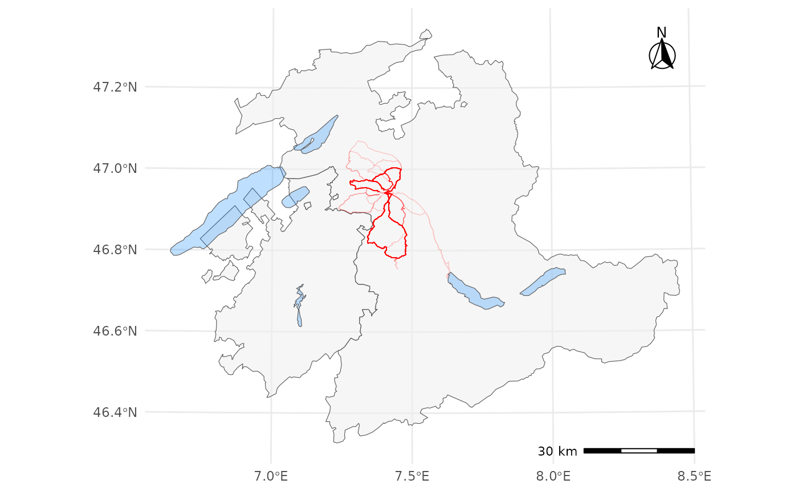

Get Started
get-started.Rmd
library(dplyr, warn.conflicts = FALSE)
library(ggplot2)
library(sf)
#> Linking to GEOS 3.12.1, GDAL 3.8.4, PROJ 9.4.0; sf_use_s2() is TRUE
library(ggspatial)
theme_set(theme_minimal())
library(asds2024.nils.practical)This package contains a practical project for a university course on data analytics. There’s some data, analyses that were performed on that data, and some miscellaneous utilities and info snippets.
To get a first overview of the data, have a look at its documentation, e.g.
?tracksor maybe plot it:
be_fr <- swiss_cantons |>
filter(KTNR %in% c(2,10)) # 2 = BE, 10 = FR
be_fr_lakes <- swiss_lakes |>
filter(grepl("Biel|Brienz|Gruyère|Murten|Neuchâtel|Thun", GMDNAME)) # only show lakes named after these towns
track_details |>
filter(!is.na(latitude) & !is.na(longitude)) |>
st_as_sf(coords = c("longitude", "latitude"), crs = "WGS84") |> # EPSG 4326 = WGS-84
st_transform(crs = 2056) |> # EPSG 2056 = CH-1903+/LV95
to_linestrings() |>
ggplot() +
geom_sf(data = be_fr, fill = "#f0f0f0", alpha = 0.5) +
geom_sf(data = be_fr_lakes, fill = "#0080ff", alpha = 0.25) +
geom_sf(color = "red", linewidth = 0.25, alpha = 0.2) +
annotation_scale(
location = "br",
height = unit(0.1, "cm"),
width_hint = 0.2) +
annotation_north_arrow(
location = "tr",
width = unit(1, "cm"),
height = unit(1, "cm"),
pad_x = unit(0.5, "cm"),
pad_y = unit(0.5, "cm"),
style = north_arrow_fancy_orienteering,
which_north = "true")
To learn more about the data, see vignette("data").
To see the analyses that were done on the data, see
vignette("analyses").
And to get a brief summary of the purpose of this package, see
vignette("about").